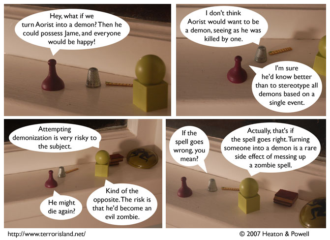

Strip #172
— Wednesday, July 18, 2007
While demonization by necromancers is rare, the demonization of necromancers by the liberal media is all too common.
Notes, Thoughts, &c.
Ben’s Notes
If Terror Island were a NetHack patch, demonization would occur when you read a cursed scroll of zombie while confused. Also, the groceryless conduct (no buying food from stores, stealing it is allowed) would be tracked.
Lewis’s Notes
If Terror Island were a hit television series, the attempt to demonize Aorist would occur in the final moments of a season finale, so that you would only see whether it was successful or not by tuning in again for the big budget season premiere. Also, we would totally have the episode where two characters who can’t stand each other get handcuffed together and stuck in a meat freezer, as well as the one where a main character accidentally gets married owing to the obscure customs of a different culture.